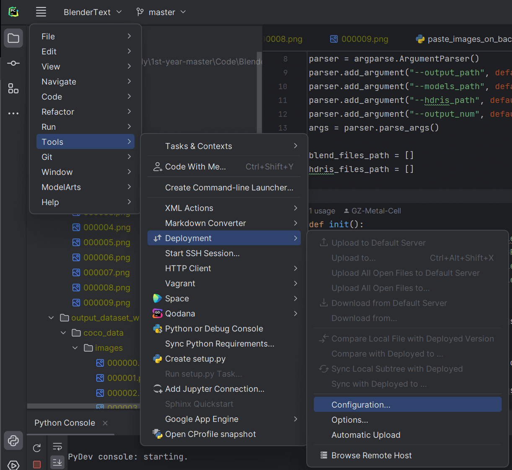
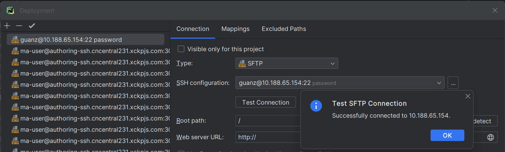
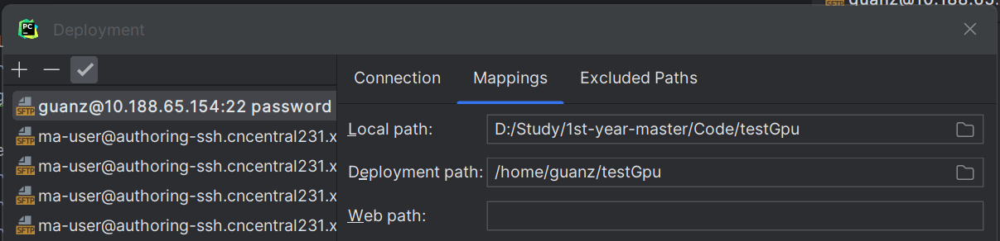
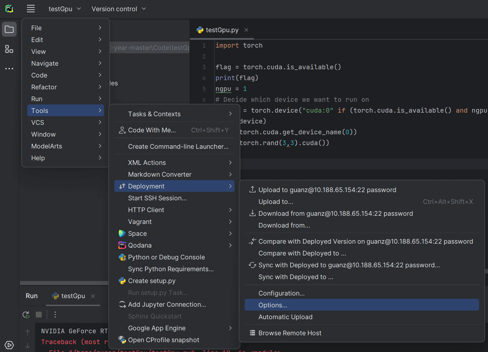

export PATH=$PATH:/usr/bin/:$PATH # >>> conda initialize >>> # !! Contents within this block are managed by 'conda init' !! __conda_setup="$('/home/guanz/anaconda3/bin/conda' 'shell.bash' 'hook' 2> /dev/null)" if [ $? -eq 0 ]; then eval"$__conda_setup" else if [ -f "/home/guanz/anaconda3/etc/profile.d/conda.sh" ]; then . "/home/guanz/anaconda3/etc/profile.d/conda.sh"# commented out by conda initialize else export PATH="/home/zhij/anaconda3/bin:$PATH"# commented out by conda initialize fi fi unset __conda_setup
base * /home/guanz/anaconda3 pytorch /home/guanz/anaconda3/envs/pytorch
查看环境是否可以使用：
1 2 3 4 5 6 7
python Python 3.9.16 (main, May 15 2023, 23:46:34) [GCC 11.2.0] :: Anaconda, Inc. on linux Type "help", "copyright", "credits" or "license"for more information. >>> import torch >>> import torchvision >>> torch.cuda.is_available()
1
True
PyCharm 连接服务器
新建一个项目testGpu，里面有一个 .py 文件 testGpu.py：
1 2 3 4 5 6 7 8 9 10
import torch
flag = torch.cuda.is_available() print(flag) ngpu = 1 # Decide which device we want to run on device = torch.device("cuda:0"if (torch.cuda.is_available() and ngpu > 0) else"cpu") print(device) print(torch.cuda.get_device_name(0)) print(torch.rand(3,3).cuda())
True cuda:0 NVIDIA GeForce RTX 3080 Traceback (most recent call last): File "/tmp/pycharm_project_2/testGpu.py", line 10, in <module> print(torch.rand(3,3).cuda()) RuntimeError: CUDA error: out of memory CUDA kernel errors might be asynchronously reported at some other API call,so the stacktrace below might be incorrect. For debugging consider passing CUDA_LAUNCH_BLOCKING=1.
Process finished with exit code 1
代码同步
Deployment → Configuration：

设置 Connection：

设置 Mappings：
Local path：本地目录
Deployment path：服务器目录

设置好后，就可以进行 Upload、Download 等操作：

Options 中如果将 Upload changed filesautomatically to the default server 设为 On explicit save action (Ctrl+S)，则可以在每次保存的时候就上传代码：